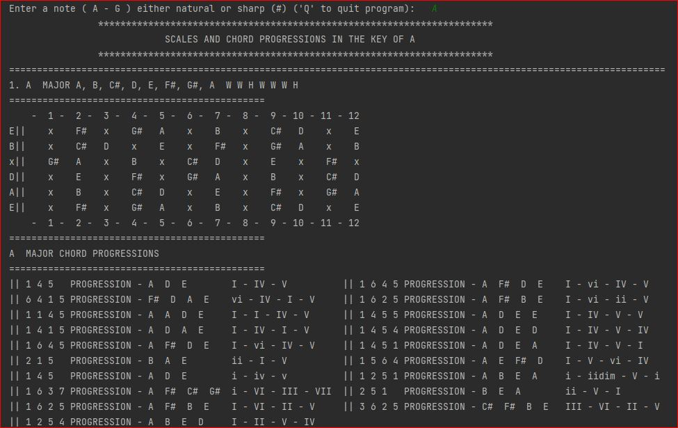

HOW IT WORKS
This program reads information from three text files at run time. The data is parsed, assigned to variables, passed to an object along with input from the user to generate musical keys, chord progressions, and display the information on a guitar fretboard INTRO
I set out to create a program that can generate guitar scales, chord progressions and keys. Aside from generating that information I wanted to display the notes of each specific key on a guitar ‘fretboard’. While creating this program I came across three major obstacles.The first obstacle was to limit the scope of this project. There are hundreds, if not thousands of scales, and manually inputting all of the necessary information would be cumbersome and time consuming. I also have to limit the features and information that this program generates because keys and scales cover a lot of information and it could easily grow beyond my initial scope. However, I needed to also allow room for modification in order to increase or decrease the number of scales.
The second obstacle was deciding the best approach for generating the information. I could either tackle the data generation functionally or dynamically. I would ultimately get the same data but depending on the number of scales the program could potentially become unnecessarily bulky. I also had to consider redundancy as many scales, such as C major and A minor, are essentially the same.
Lastly, I had to find the best approach for conveying information to the user. Each scale has majors, minors, diminished, and other modifications that need to be relayed to the user. Some of it is pertinent and some is not. I have to assume a certain level of musical literacy but also make it accessible to all users.
FIRST OBSTACLE
To better understand this obstacle, it is best to provide a bit of context. Musical notes are written in many ways, the most common is through the use of letters A through G. When iterating through each note and its respective sharp or flat one is playing the chromatic scale, and once the scale reaches G ( G# specifically) it loops back to A. Keys, on the other hand, serve to provide tonal harmony and foundation to music. They are centered around a ‘root note’ and unlike the chromatic scale, the notes in a key can be played in any order. This order is referred to as a ‘progression’.With out getting into too much detail, scales are created by increasing a certain amount of ‘steps’ from the root note. A ‘step’ is and increase of two tonal values, for example A goes to B or E goes to F#, and a ‘half step’ is an increase of one tonal value, A goes to A# and E goes to F. With these two pieces of information, the root note and the step count, a musician can find all notes within a scale. This is in essence how the program generates the data. It prompts the user for a root note (including sharps or flats) and uses a predefined list of steps to create the keys and scales. This limits the amount of information that must be stored by the program, and allows for more efficient workflow, as musical notation can be added programmatically if needed. This also lowers the barrier of entry for people that want to modify the program to include their own keys.
SECOND OBSTACLE
Now that I sorted out the scope of my data and program, I needed to find the best way to generate the information at run time.
I first considered functionally generating the data, the program would generate all of the scales at once for every chromatic note ( A, A#, B, C, C#....G#) and store the data in memory or offload it to a file which would then be used to pull information. This seemed like a sound idea if the data were stored in a hash map/dictionary and the root note (user input) acted as a key. However, this limits flexibility. The user or programmer will have to generate a whole new data set every time they add or modify a scale, potentially having thousands of scales ‘hard coded’ would make it difficult to make corrections without having to sort through lines and lines of musical notes. On top of this the program would also have to store scale names, chord progressions, and fretboard locations for each and every scale making it difficult to pull information or requiring multiple files for each scale. I considered storing the data in various formats like JSON but having all of that data hard coded didn’t sit right, and I ultimately decided to approach this dynamically.
Based on my decision when tackling the first obstacle, I knew that I had the information I required to create the data dynamically. As I mentioned earlier scales move in steps and use the following shorthand: Whole step is denoted with a ‘W’, half step with an ‘H’ and they are separated by hyphens. By setting a starting location, the root note, I could then ‘step through’ the chromatic scale and generate the data.
Example
Root Note: CChromatic scale starting at C: C - C# - D - D# - E - F - F# - G- G# - A - A# - B - C
Major scale steps: W - W - H - W - W - W – H (tonal values: 2,2,1,2,2,2,1)
C + W = D, D + W = E, E + H = F, F + W = G, G + W = A, A + W = B, B + H = C
C Major scale: C D E F G A B C
This meant that I would not only generate the scales, but I would also be able find the notes on the fretboard, and chords for progressions in one step. With this information I would then mostly focus on displaying the information and formatting it correctly. So, I decided the best course of action was to create a class since the only thing that made each object unique was the root note, and all other information was pretty rigid.
Hurdle
Unlike the example I provided the chromatic scale does not actually have to start on the root note since it loops indefinitely. This meant that looping through the chromatic scale when generating the scale would throw index range errors, since the index is increase by the step value.Solution
I assigned the class a local chromatic scale starting on A, rather than storing 12 scales for each root note. This meant that any note, aside from A, would be out of range when stepping through a scale. The algorithm starts at the root note index value, appends that note to a new list, and increased the index by the step value.Example
Root note: C
Major scale steps: W - W - H - W - W - W – H ( W = 2, H = 1)
Chromatic Scale:
note = [A, A#, B, C, C#, D, D#, E, F, F#, G, G# ]
C is at index 3
note[3] is appended to a list, next step = W (2)
note[3+ W] = note[5] which is D
note[5 + W] = note[7] which is E
note[7 + H] = note[8] which is F
note[8 + W ] = note[10] which is G
note[10 +W] = note[12] which is A *** index out of range ***
This was solved by subtracting 12( length of chromatic scale ) from the index value, meaning any index out of range would essentially loop back the to beginning. The index value would continue to increase out of range but by subtracting 12 for any index value <= 12 I would avoid having to reset a counter every time I created a scale.
note[12 -12] = note[0] which is A, the index value would still increase to 14
note[ 12+ W] = note[14 -12] = note[2] which is B
note[14 + H] = note[15 -12] = note[3] which is C
Ultimately, this solution could have worked just as well if I had hard coded 12 separate scales and stepped through them as I would have avoided index range errors. But, by using this method I felt that I had more flexibility when it came to controlling nested for loops and managing merging multiple lists while keeping track of the data.
From this point on it was a matter of using the newly generated scales to create chord progressions. This was relatively simple as chord progressions use integer values to represent notes from the scale, and I only had to decrease the index value by 1, while looping through the scale.